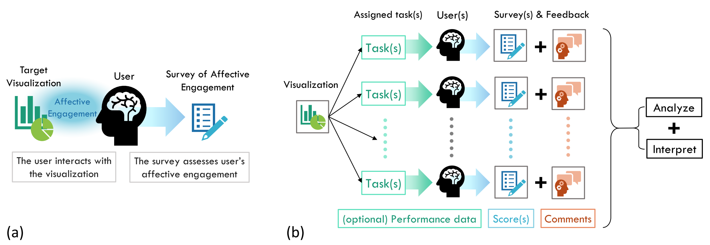

Affective Engagement for Communicative Visualization: Quick and Easy Evaluation using Survey Instruments
As visualization for communication becomes more prevalent, it is important to have ways to evaluate the ``success'' of communicative visualizations beyond traditional analysis- and performance-oriented approaches. There are many metrics on which the success of communicative visualizations could be viewed, including those related broadly to the user's subjective experience. One construct that has received attention in recent years is user engagement. In this paper, we examine the role of affective engagement (AE) in evaluating communicative visualizations. We explore options for assessing AE, and report a literature review on potentially relevant survey instruments. We provide suggestions on how to evaluate AE, discussing steps and analytical methods to develop a self-report assessment based on our ongoing work on AE in information visualization.
Publication
Affective Engagement for Communicative Visualization: Quick and Easy Evaluation using Survey Instruments. Ya-Hsin Hung, Paul Parsons. In IEEE VIS '18: Proceedings of the 2018 IEEE Conference on Information Visualization, CommVis Workshop. PDFExisting Survey Instruments
We conducted a brief survey of relevant evaluation instruments, the authors searched for and collected relevant self-report instruments. The initial search was very broad; besides some general resources from HCI and UX handbooks, we also searched online using the following keywords: ``visualization'', ``user experience'', ``engagement'', ``communication'', ``persuasion'', ``emotion'', ``survey'', ``questionnaire'', ``scale'' and their various combinations.
3 inclusion criteria---each instrument should: (1) be concerned with human-technology relationships; (2) be associated with a publication, (3) not require specialized equipment.
| Name | Year | Main Construct | # of items | Commercial Version | Specific Platform/Scenario | Intended Platform | |
|---|---|---|---|---|---|---|---|
| R1 | System usability Scale (SUS) | 1986 | Usability | 10 | System/Technology | ||
| R2 | NASA Task Load Index (TLX) | 1986 | Subjective workload | 6 | Interface/System | ||
| R3 | Questionnaire for User Interface Satisfaction (QUIS) | 1988 | Satisfaction | 27 |  |
|
Interface |
| R4 | Perceived Usefulness and Ease of Use (PUEU) | 1989 | Usefulness and Ease of Use | 12 | |
System/Technology | |
| R5 | The After-Scenario Questionnaire (ASQ) | 1990 | Satisfaction | 4 | System/Technology | ||
| R6 | The Post-Study System Usability Questionnaire (PSSUQ) | 1992 | Usability | 16 | System/Technology | ||
| R7 | Nielsen's Heuristic Evaluation | 1994 | Usability | 10 | System/Technology | ||
| R8 | Computer System Usability Questionnaire (CSUQ) | 1995 | Usability | 19 | System/Technology | ||
| R9 | Software Usability Measurement Inventory (SUMI) | 1995 | User experience | 50 | |
|
Software |
| R10 | Presence Questionnaire Item Stems | 1998 | Presence | 32 | |
Virtual environment | |
| R11 | Website Analysis and Measurement Inventory (WAMMI) Questionnaire | 1998 | User experience | 20 | |
|
Website |
| R12 | USE Questionnaire | 2001 | Usability | 30 | System | ||
| R13 | Unified Theory on Acceptance and Use of Technology (UTAUT) | 2003 | Technology Acceptance | 31 | Technology | ||
| R14 | Fun questionnaire | 2005 | User experience (fun) | 14 | Educational system | ||
| R15 | Cognitive absorption and TAM | 2005 | TAM+cognitive absorption | 22 | |
System/Technology | |
| R16 | The Single Ease Question (SEQ) | 2006 | Ease of use | 1 | |
System/Technology | |
| R17 | Immersive Experience Questionnaire (IEQ)-a | 2008 | Experience of immersion | 31 | |
Video game | |
| R18 | Immersive Experience Questionnaire (IEQ)-b | 2008 | Experience of immersion | 33 | |
Video game | |
| R19 | User Experience Questionnaire (UEQ) | 2008 | User experience | 26 | |
System/Technology | |
| R20 | Gaming Engagement Questionnaire (GEQ) | 2009 | Deep engagement | 19 | |
Video game | |
| R21 | The Subjective Mental Effort Question (SMEQ) | 2009 | Ease of use | 1 | |
System/Technology | |
| R22 | User Engagement Scale (UES) | 2010 | User engagement | 31 | System/Technology | ||
| R23 | Measurement Model of User Engagement | 2015 | User engagement | 12 | |
Website | |
| R24 | Standardized User Experience Percentile Rank Questionnaire (SUPR-Q) | 2015 | User experience | 8 | |
System/Technology |
= “Yes”).Using our Survey Instrument
Consider a scenario where a visualization practitioner wants to evaluate their communicative visualization (e.g., an interactive visualization incorporated with an online magazine article) according to levels of AE within a target group of users. The practitioner can recruit a group of respondents (more is generally better, but size can be adjusted depending on resources and other factors) from their target population (e.g., readers of that online magazine). By asking respondents to answer the items after interacting with the visualization, the practitioner can calculate the level of AE of those particular participants. By averaging scores, user's AE levels can be estimated for that visualization.
Figure (a) provides a visual depiction of an evaluation scenario where a survey instrument is being used to assess AE. (b) shows how a designer can utilize a survey for a pilot tryout and for user testing. Note that for both cases, the evaluation can be conducted on-site (e.g., lab study) or remotely (e.g., online crowd-sourcing). A short self-report survey instrument (with roughly 10 items) will not take too much time, which makes a larger scale user testing more feasible (e.g., online crowd sourcing).

(a) How a survey instrument assesses single user's affective engagement on one visualization. (b) The evaluation scenario of utilizing survey instrument to assess multiple users' AE on a communicative visualization. User study results including survey instruments scores, user's subjective feedback, and (optional) user's performance data could be collected along the way.
Consider a scenario where a visualization practitioner wants to evaluate their communicative visualization (e.g., an interactive visualization incorporated with an online magazine article) according to levels of AE within a target group of users. The practitioner can recruit a group of respondents (more is generally better, but size can be adjusted depending on resources and other factors) from their target population (e.g., readers of that online magazine). By asking respondents to answer the items after interacting with the visualization, the practitioner can calculate the level of AE of those particular participants. By averaging scores, user's AE levels can be estimated for that visualization.
Figure (a) provides a visual depiction of an evaluation scenario where a survey instrument is being used to assess AE. (b) shows how a designer can utilize a survey for a pilot tryout and for user testing. Note that for both cases, the evaluation can be conducted on-site (e.g., lab study) or remotely (e.g., online crowd-sourcing). A short self-report survey instrument (with roughly 10 items) will not take too much time, which makes a larger scale user testing more feasible (e.g., online crowd sourcing).